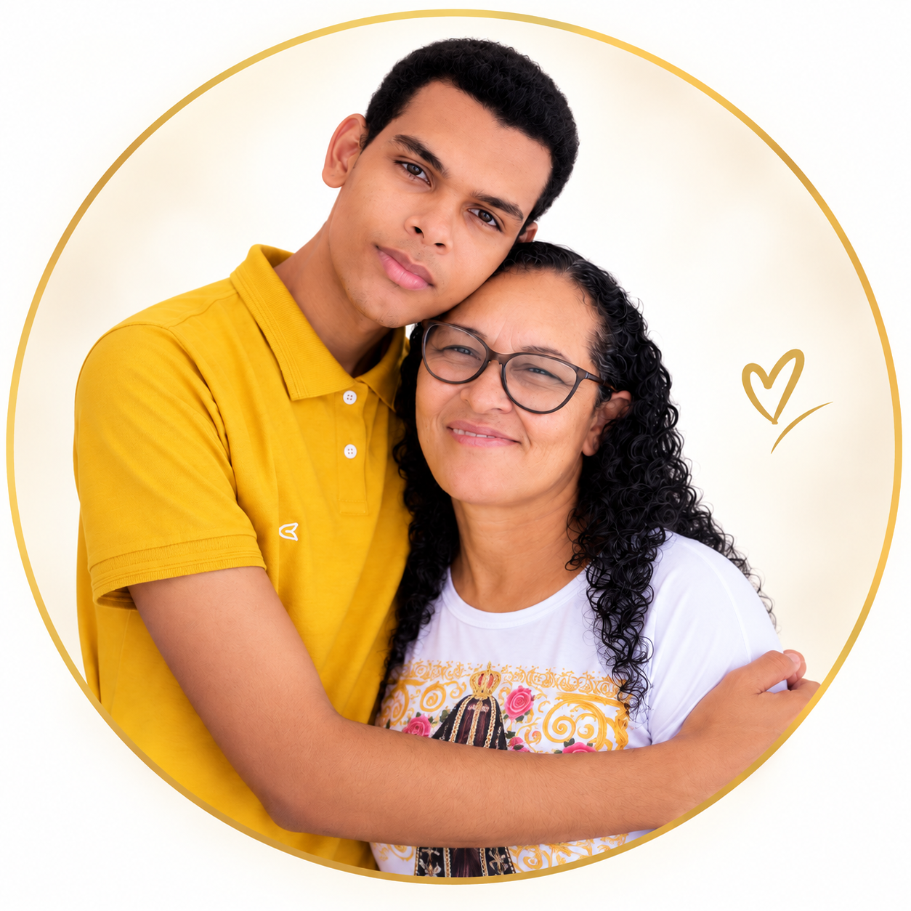
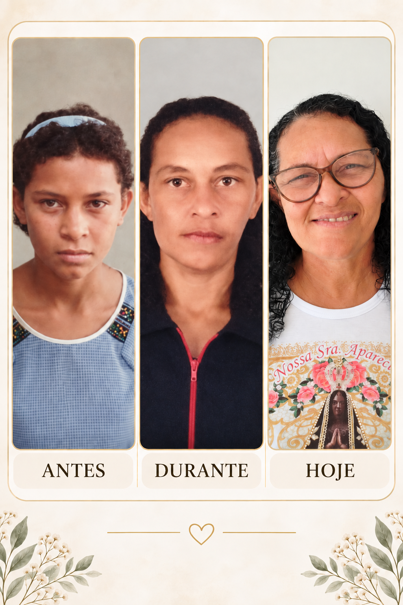

Foi a irmã de Lourdes quem percebeu primeiro que sua boca começava a ficar torta. Ainda jovem, ela procurou atendimento e chegou a ter uma cirurgia marcada em Natal, mas perdeu a oportunidade por não ter quem pudesse acompanhá-la.

Uma campanha de filho para mãe ❤️
Ajude Lourdes a realizar sua cirurgia ortognática
Há mais de 30 anos ela convive com alterações no maxilar que afetam a mastigação, causam dores e também tiveram grande impacto em sua autoestima.
PIX da campanha
O valor vai diretamente para a conta usada por Matheus para separar os recursos da cirurgia.
Chave Pix
124.638.074-90
Matheus de Jesus Freire da Silva • filho de Lourdes
💡 Antes de concluir o Pix, confira no seu banco se o nome do recebedor corresponde ao informado acima.
Mais de três décadas convivendo com o mesmo problema
A vida seguiu: trabalho, filhos, responsabilidades e dificuldades financeiras. Enquanto cuidava da família, o problema continuou se agravando.
Lourdes relata que mastiga principalmente de um lado, sente dores que podem durar dias, percebe estalos no maxilar e dificuldade com algumas palavras. Também passou anos evitando fotos e sorrisos por causa da autoestima.
Depois de nova avaliação com especialista, recebeu a esperança de que existe possibilidade de tratamento cirúrgico. A família agora está reunindo recursos para exames, planejamento e cirurgia.
Antes • Durante • Hoje

“Quero poder sorrir, dar gargalhada, conversar normal e tirar minhas fotos sem vergonha.”
— LourdesEla cuidou dos filhos. Agora os filhos lutam por ela.

Durante todos esses anos, Lourdes trabalhou, criou os filhos e seguiu em frente. Esta campanha nasceu para que, agora, a família também possa cuidar dela.
Como vamos prestar contas
🩺 Exames e consultas
Atualizações sobre cada etapa do tratamento.
💰 Arrecadação
Divulgação periódica do total recebido e do valor que ainda falta.
🧾 Despesas
Registro dos principais gastos relacionados ao tratamento.
Ajude esta história a chegar mais longe
R$ 10 para uma pessoa pode parecer pouco. Para nós, cada contribuição nos aproxima da cirurgia.
Se não puder doar, compartilhe. Isso também é ajuda.